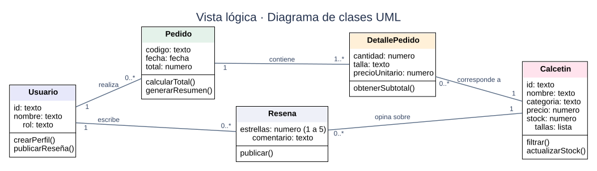
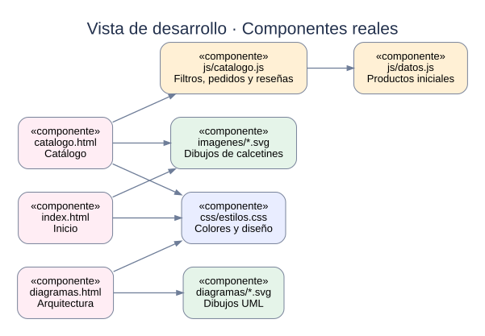
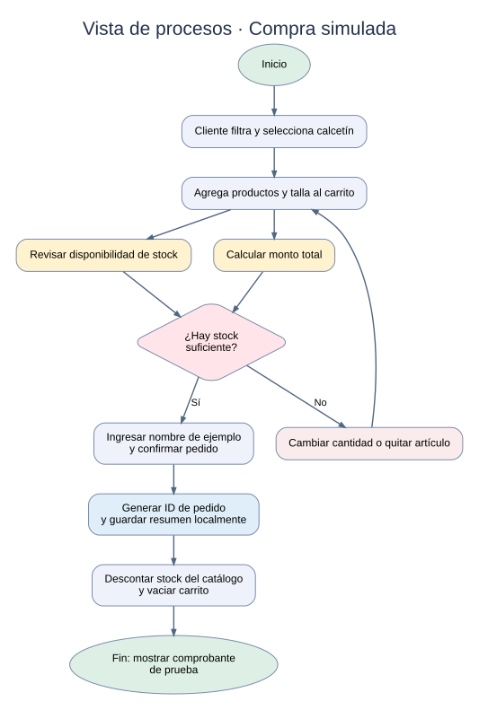
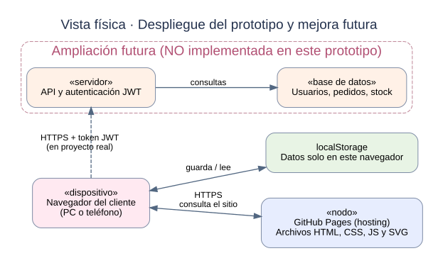
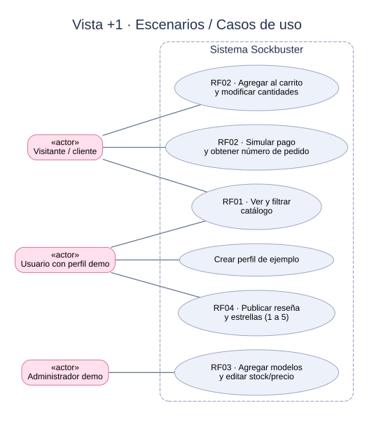

Arquitectura UML 4+1.
Las cinco vistas muestran cómo se organiza y funciona el sistema Sockbuster. Cada explicación está escrita de forma sencilla.
Vista lógica
Explica cuáles son los objetos principales del sistema y cómo se relacionan: usuarios, calcetines, pedidos y reseñas. Cada clase tiene datos (atributos) y acciones (métodos).

Ejemplo: un pedido tiene uno o más detalles y cada detalle corresponde a un calcetín. Un usuario puede escribir varias reseñas.
Vista de desarrollo (implementación)
Muestra los archivos y partes que usamos para construir la página. HTML crea las pantallas, CSS cambia su apariencia y JavaScript hace funcionar el catálogo y el carrito.

Archivos reales: index.html, catalogo.html, diagramas.html, css/estilos.css, js/datos.js y js/catalogo.js.
Vista de procesos
Representa los pasos de una compra de prueba: elegir productos, revisar stock, calcular total, confirmar y generar un número de pedido. También muestra la decisión cuando no alcanza el stock.

Importante: revisar stock y calcular el total son dos controles necesarios antes de confirmar. En este prototipo ambos se realizan en el navegador; no existe pago real.
Vista física (despliegue)
Muestra dónde funciona el sitio. Los archivos se publican en GitHub Pages y el visitante los abre desde su navegador usando HTTPS. El carrito y las reseñas se guardan temporalmente en el almacenamiento de ese navegador.

Seguridad: GitHub Pages puede servir la web por HTTPS. Un inicio de sesión con JWT requeriría añadir un servidor/API: está dibujado como una mejora futura, no como algo ya desarrollado.
Escenarios (casos de uso)
Resume lo que cada persona puede hacer: explorar calcetines, agregar al carrito, simular una compra, publicar reseñas y modificar el inventario de prueba.

Relación con las otras vistas: estos casos de uso se apoyan en las clases, los archivos, el proceso de compra y el despliegue mostrados antes.
Requerimientos del caso Sockbuster
| Código | Qué pide | Dónde se muestra |
|---|---|---|
| RF01 | Catálogo, colecciones, tallas, precios y stock | Catálogo y vista lógica |
| RF02 | Carrito, cantidades y resumen con ID de pedido | Catálogo y vista de procesos |
| RF03 | Agregar modelos, cambiar precio y stock | Administración demo y vista de desarrollo |
| RF04 | Valoraciones de 1 a 5 estrellas y comentarios | Perfil y reseñas demo |
| RNF01 | Web publicada en un hosting accesible | Vista física, al publicar en GitHub Pages |
| RNF02 | HTTPS y autenticación JWT administrativa | HTTPS al publicar; JWT pendiente de backend real |